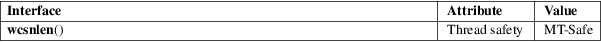

wcsnlen − determine the length of a fixed-size wide-character string
Standard C library (libc, −lc)
#include <wchar.h>
size_t wcsnlen(const wchar_t s[.maxlen], size_t maxlen);
Feature Test Macro Requirements for glibc (see feature_test_macros(7)):
wcsnlen():
Since glibc 2.10:
_POSIX_C_SOURCE >= 200809L
Before glibc 2.10:
_GNU_SOURCE
The wcsnlen() function is the wide-character equivalent of the strnlen(3) function. It returns the number of wide-characters in the string pointed to by s, not including the terminating null wide character (L'\0'), but at most maxlen wide characters (note: this parameter is not a byte count). In doing this, wcsnlen() looks at only the first maxlen wide characters at s and never beyond s[maxlen−1].
The wcsnlen() function returns wcslen(s), if that is less than maxlen, or maxlen if there is no null wide character among the first maxlen wide characters pointed to by s.
For an explanation of the terms used in this section, see attributes(7).

POSIX.1-2008.
glibc 2.1.
strnlen(3), wcslen(3)